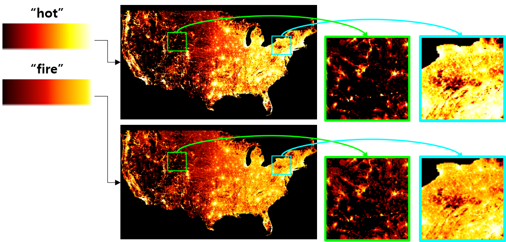
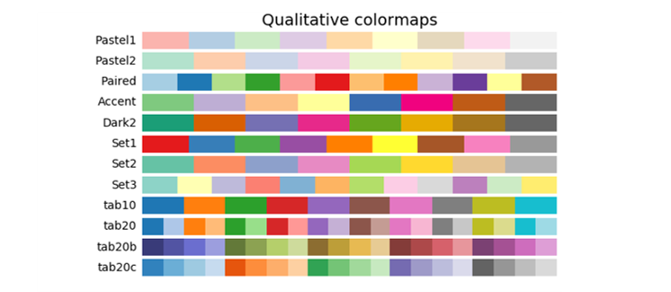
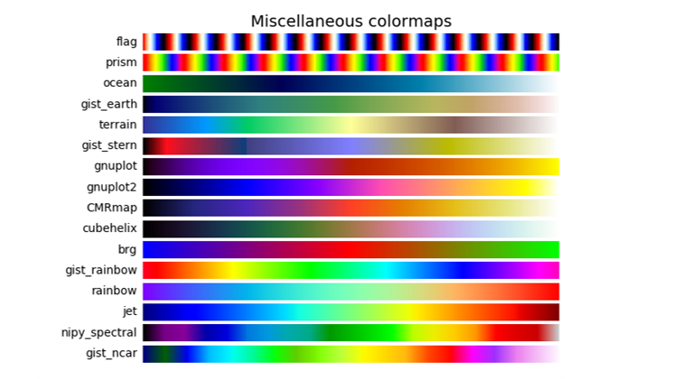
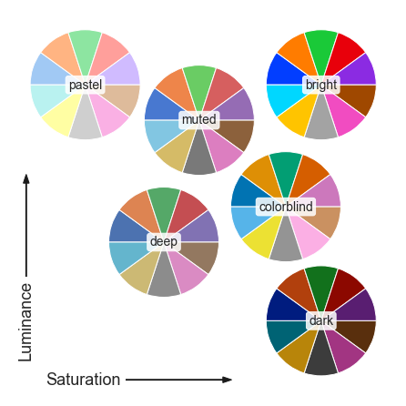
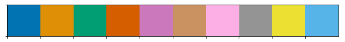
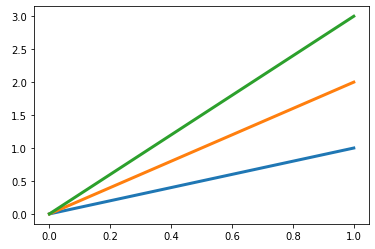

- 지난 글에서, scatter plot에 colormap을 입히고 colorbar를 제어하는 방법, 그리고 흑백 이미지에 colormap을 입히는 방법을 알아보았습니다.
- 이번 글에서는 어떤 colormap을 선택하는 것이 적절할지, 그리고 colormap 자체를 제어하고 활용하는 방법을 알아보도록 하겠습니다.
- 본 글은 공식 홈페이지의 번역과 요약을 토대로 작성되었습니다.
1 | import matplotlib.pyplot as plt |
실행결과: 버전은 3.1.3. 기준입니다.
1
'3.1.3'
References
2. Colormap 선정
- Matplotlib은 자체적으로 상당히 많은 colormap을 제공하고 있습니다.
- 그러나 언제 어떤 colormap을 사용할지 선택하는 것은 별개의 문제입니다.
- 데이터를 목적에 맞게 전달해야 하고, 아름다워야 하고, 때로는 흑백 버전에서도 구분되어야 합니다.
2.1. Overview
Color Sequences for Univariate Maps: Theory, Experiments, and Principles
A rule-based tool for assisting colormap selection
CIELAB, Wikipedia
colormap 선정에 앞서 다음 사항을 고려해야 합니다.
- 표현의 대상: 데이터의 형태(form)인지, 아니면 수치(metric)인지.
- 데이터에 대한 지식: 강조해야 할 특정 값이 있는지?
- 직관성: 데이터를 직관적으로 전달하는 색상이 있는지?
- 보편성: 해당 분야에서 보편적으로 의미를 가지고 통용되는 색상이 있는지?
일반적으로는, 동일 색조의 균등한(uniform) colormap이 최상의 선택입니다.
- 사람의 뇌는 색의 명도(brightness)변화를 색상(hue)변화보다 더 잘 받아들이기 때문입니다.
- 미국 인구밀도 분포 예시를 보겠습니다 (colormap:
hot)
fire적용시hot보다 데이터의 디테일을 잘 살립니다.- 표현 가능한 색상의 범위가 더 넓고, 시각적으로 균일(perpetually uniform)하기 때문입니다.

색상을 표현하는 방법엔 여러 가지가 있습니다.
- 그 중 CIELAB 방식은 인간의 색채 지각에 대한 연구를 바탕으로 다음과 같이 정의합니다.
- : Lightness (0=black, 100=white)
- : Position between Magenta and Green (-: Green, +: Magenta)
- : Position between Yellow and Blue (-: Blue, +: Yellow)
- matplotlib은 를 이용해 시각적 전달력을 높이는 전략을 채택하고 있습니다.
2.2. Colormap 종류
- colormap은 기능에 따라 크게 4가지로 나눌 수 있습니다.
- Sequential: 주로 밝기나 채도를 점진적으로 변화시키는 방식입니다.
단일 색상을 사용하기도 하는데, (수치 등) 순서가 있는 데이터라면 필수입니다. - Diverging: Sequantial이 적용된 두 colormap을 중간값에서 무채색으로 연결합니다.
Pearson 상관계수처럼 중간값이 특별한 의미를 가질 때 사용합니다. - Cyclic: 둘 이상의 색상을 양 극단과 중간값 등에서 연결합니다.
각도나 풍향, 시간처럼 주기성이 있는 데이터에 사용합니다. - Qualitative: 범주형(categorical) 데이터처럼 각각이 독립된 의미를 가질 때 사용합니다.
- Sequential: 주로 밝기나 채도를 점진적으로 변화시키는 방식입니다.
- matplotlib이 가지고 있는 네 가지 부류의 colormap을 하나씩 살펴보겠습니다.
- 소스코드는 여기에 있습니다.
2.2.1. Sequential
- Sequential colormap은 대체로 Lightness가 단조증가합니다.
- 일부는 의 범위가 0~100이지만, 일부는 20부터 시작합니다.
범위가 작으면 표현 범위가 줄어듭니다. - 가 시각적으로 선형(perpetually linear)인 것도 있고, 곡선을 취하는 것도 있습니다.
곡선이 된다는 의미는 특정 영역이 강조되고 특정 영역이 뭉개질 수 있다는 의미입니다. - [ 주의 ] Sequential (2) 에 속하는 colormap은 이 심하게 꺾이거나 반전되어 있습니다.
흑백 인쇄물에서 데이터 왜곡이 발생할 수 있으니 사용시 주의바랍니다.
- 일부는 의 범위가 0~100이지만, 일부는 20부터 시작합니다.
- Matplotlib이 제공하는 Sequential colormap은 다음과 같습니다.
- Perpetually Uniform Sequential:
viridis,plasma,inferno,magma,cividis
- Sequential:
Greys,Purples,Blues,Greens,Oranges,Reds,YlOrBr,YlOrRd,OrRd,PuRd,RdPu,BuPu,GnBu,PuBu,YlGnBu,PuBuGn,BuGn,YlGn
- Sequential (2):
binary,gist_yarg,gist_gray,gray,bone,pink,spring,summer,autumn,winter,cool,Wistia,hot,afmhot,gist_heat,copper
- Perpetually Uniform Sequential:
2.2.2. Diverging
- Diverging은 두 개의 Sequential colormap이 부근에서 만나는 형태로 꺾여있습니다.
- 양 극단의 값이 비슷하면 데이터를 알아보기 좋은데,
BrBG나RdBu가 이 점에서 좋습니다. coolwarm도 좋은 선택이지만 표현되는 범위가 좁다는 단점이 있습니다.
- 양 극단의 값이 비슷하면 데이터를 알아보기 좋은데,
- Matplotlib이 제공하는 Diverging colormap은 다음과 같습니다.
PiYG,PRGn,BrBG,PuOr,RdGy,RdBu,RdYlBu,RdYlGn,Spectral,coolwarm,bwr,seismic
2.2.3. Cyclic
- Cyclic은 시작과 끝의 색상과 이 동일해야 합니다.
- Diverging처럼 단조증가와 단조증가를 반복할 수도 있고,:
twilight,twilight_shifted - HSV 공간에서 색상을 변화시키는 방식도 있습니다:
hsv
[ 주의 ] HSV 방식은 이 오르내리기 때문에 흑백 인쇄시 데이터를 알아보기 어렵습니다.
- Diverging처럼 단조증가와 단조증가를 반복할 수도 있고,:
- Matplotlib이 제공하는 Cyclic colormap입니다.

2.2.4. Qualitative
- 독립적인 데이터를 시각화하는 목적이기 때문에 제약도 없습니다.
- 연속적인 데이터를 시각화할 때는 사용해서는 안됩니다.
- Matplotlib에서는 다음과 같은 Qualitative colormap을 제공하고 있습니다.
Pastel1,Pastel2,Paired,Accent,Dark2,Set1,Set2,Set3,tab10,tab20,tab20b,tab20c
2.2.5. Miscellaneous
- 이름 그대로, 특정 목적을 가지고 만들어진 ‘여러 가지’ colormap입니다.
- 예를 들면
gist_earth,ocean,terrain은 지리정보시스템(GIS)에서 사용됩니다. - 지형을 녹색과 갈색으로 표현하고 바다의 깊이를 파랑으로 표현하는 식입니다.
CMRmap은 회색조로 변환되었을 때를 염두에 두고 만들어진 colormap이며,cubehelix는 밝기와 색상을 동시에 부드럽게 전환하기 위해 만들어진 colormap입니다.
- 예를 들면
- 가장 많이 사용되는
jet와rainbow도 여기에 속해있습니다.- matplotlib colormap 예제에 있어서이고 무지개색이라는 점이 친숙해서 아무데나 많이 쓰입니다.
- 그러나 직관적 이해도와 직결된 분포 관점에서 볼 때 바람직한 선택은 아닙니다.
Matplotlib에서 제공하는 Miscellaneous colormap 명단은 다음과 같습니다.
flag,prism,ocean,gist_earth,terrain,gist_stern,gnuplot,gnuplot2,CMRmap,cubehelix,brg,gist_rainbow,rainbow,jet,nipy_spectral,gist_ncar- 색상을 주루룩 늘어놓으면 이렇게 보이는데,

- 값과 함께 보면 이렇습니다.

- 색상을 주루룩 늘어놓으면 이렇게 보이는데,
2.3. Color Vision Deficiencies
Color Blindness- learn all about it
15 Tools If You Are (Not) Colorblind
Seaborn, Building color palettes
- “형, 저 사실 색약이예요. 좀 심해요.”
- 그래프를 그릴 때마다 선배에게 혼나던 후배가 있었습니다.
- 선배가 한참 혼낸 후, 저더러 좀 가르쳐주라고 보냈길래 커피 한 잔을 먼저 마시려는데 저 말을 하더군요.
- 미안함과 난감함이 교차했습니다. 위로를 하기도 뭐하고 어떻게 가르칠지는 더 그랬구요.
- 색약, 색맹인 분들도 디지털의 도움을 빌려 어려움을 어느 정도 해소할 수 있습니다.
- 보통 빨강과 녹색을 구분하지 못하는 적녹색맹이 많습니다.
- 이들 중 하나만 다른 색상으로 치환해도 알아보기 훨씬 편하다고 합니다.
- 이 글을 보는 분께서 색상 구분으로 인한 어려움을 겪으신다면 이 링크를 참고해보세요.
matplotlib에서도 Red와 Green이 함께 포함된 colormap 사용을 피하는 것을 권합니다.
- matplotlib 기반인 seaborn에서는 이런 분들을 위한 color palette를 제공하고 있습니다.

- 색상 구별에 어려움을 겪는 분들께서 그림을 알아보기 조금 수월해진다고 합니다.
seaborn
colorblindcolormap 호출1
2
3import seaborn as sns
current_palette = sns.color_palette('colorblind')
sns.palplot(current_palette)- 실행결과

- 실행결과
matplotlib 형식 graph 작성
1
2
3
4fig, ax = plt.subplots()
ax.plot([0, 1], [0, 1], lw=3)
ax.plot([0, 1], [0, 2], lw=3)
ax.plot([0, 1], [0, 3], lw=3);- 실행결과

- 실행결과
- matplotlib 기반인 seaborn에서는 이런 분들을 위한 color palette를 제공하고 있습니다.